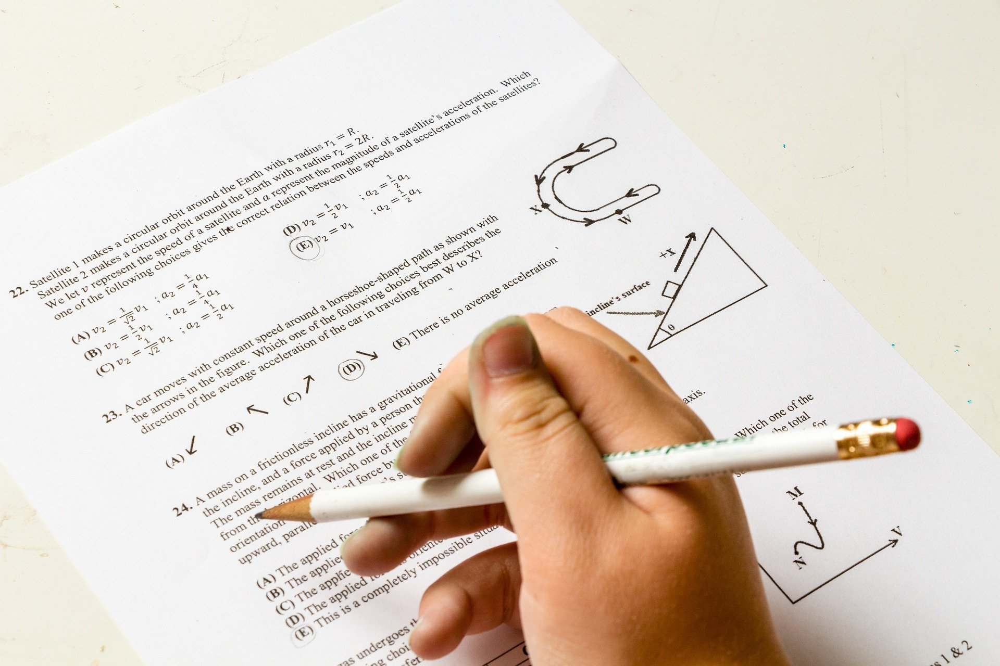

為什麼 busy 後面可以接 V-ing
Tyler Wang發表於10月 2, 2022
- 一般文法書定義 busy 與 worth 之後加 V-ing，
- 是因為省略一個介系詞。
| be busy + 介系詞 + V-ing |
| be worth + 介系詞 + V-ing |
- 首先我們要確定不是只有『in』才適合這種句子
| I am busy in doing my assignments. |
| →I am busy for doing my assignments. |
| →I am busy with doing my assignments. |
- 討論:
- 1. 不同介系詞片語，有其內斂其中的另一種涵義。
- 但是為什麼有另一種用法卻省去了句子的關鍵用字呢?
- 理由是什麼?
- 如: I am busy doing my assignments.
- 2. be used to + V-ing (動名詞) 表示『現在習慣』
- used to +VR (動詞原式) 表示『過去習慣』
- I am used to getting up early.
- I used to get up early.
- 如何有理解釋呢?
- 3. Windows 11 Installation Assistant is used to upgrade from Windows 10 to Windows 11.
- 這個句子是正確的。為什麼 be used to +VR?